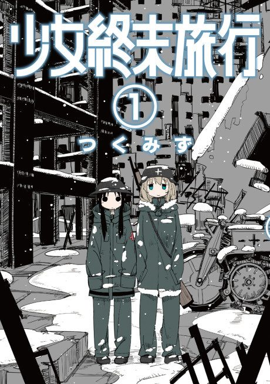

Girls' Last Tour
少女終末旅行
Chito and Yuuri, two girls riding a half-track through the ruins of civilisation, look for food and fuel and enjoy the small things they find.
After the anime, read the manga from Chapter 35.
8.2AniList score
—Animeter, no votes yet
12episodes
Rate it or report where you stopped
Anime finished. Where does the manga pick up?
Start at Chapter35
The anime ends at chapter 34 ('Friends'), the end of volume 4, so start at chapter 35 (volume 5). The manga is complete at 47 chapters.
13447 end
Season 1Start reading here